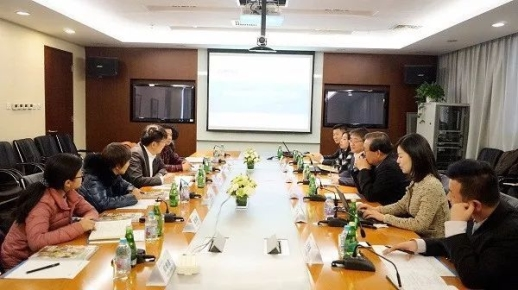

为导游发声：没有导游的职业尊严， 怎么可能有品质旅游的未来？！
“导语：长期以来，针对导游群体由于一方面规范管理不够，另一方面关爱保障不足造成了种种乱象、遗憾和不幸。今天，中国旅游研究院院长戴斌为导游发声：没有导游的职业尊严，怎么可能有品质旅游的未来。没有导游服务价值的体现，又怎么会有旅游领域的工匠精神！希望在2018年开年之际，给业者带来更多正能量。以下是戴院长的发言全文。”

谢谢陈小兵总裁的精心安排和凯撒旅游同志们的畅所欲言，让我在2018新年伊始就听到了来自旅游一线最真实、最动人，也最宝贵的声音。从同志们的意见和建议里，我能够感受到导游这个群体对广大游客发自内心的热爱，对旅游业发自内心的认同，以及对国家旅游行政主管部门和行业组织发自内心的信任。
是时候站出来为导游发声
自1951年厦门华侨服务社成立以来，导游就是国家旅游事业的中坚力量。由于你们的专业讲解和高效安排，越来越多的国际友人、港澳台同胞和海外侨胞亲身体会并认同了社会主义新中国的建设成就。自1979中国旅游事业转向旅游产业以来，导游更是旅行社市场化进程的见证者和推动者。导游在开展旅游外交、保障服务品质、推动企业改革和产业创新发展等方面做出了卓越的贡献。1999年国民旅游兴起直到进入大众旅游新时代，市场经历了一个从精英到大众的快速发展过程。客观地讲，在这个过程中，导游群体承载旅游产业乃至整个社会的转型之重，也可以说受了不少委屈。但是全国60余万导游队伍还在，人心没散，依然奋战在旅游工作的第一线，用我们的才情和努力，让旅游越来越专业，也越来越有温度。所有已经过去的、正在发生的和将要来临的，共和国都不会忘记，旅游人更不会忘记！
作为国家旅游智库的领导者，我来晚了，对导游这个国家旅业的样本关注得不够。
在过去的二十年里，北京过一段时间就会对“非法一日游”来一场严厉打击，打击的对象首先指向“黑车、黑导”。对此，我没有说话，因为导游和司机是“黑的车、黑的导”。却没有进一步想这座号称世界旅游目的地的国际化大都市为什么会有“黑”的导游，为什么那么多“白”的导游不能够，或者说不愿意进入一日游的服务领域？
在过去的两年里，云南启动了“史上最严”旅游市场整治。无论是“六个严禁”还是“二十二项措施”，导游等一线服务人员也是首当其冲的整治对象，也是负面舆论的靶点。对此，我也没有说话。因为总要有人出来承担责任，况且媒体曝光的事件确实引起了公众的不满。尽管没有人去统计被曝光的导游占当地、全省和全国导游的比例是多少，也没有人去研究游客受损背后的运行机制与时代背景，仿佛揪出一个千夫所指者，就可以让我们心安理得地立于道德制高点上自证清白似的。
直到年前，从国家旅游局官方网站看到重庆领队何永杰先生，在泰国大象园为救助游客而不幸牺牲。之后关于事发原因的探究与分析却似乎陷入了罗生门，政治、经济和法律的善后工作也没有让逝去的灵魂得到应有的安宁。我想该是站出来的时候了：没有导游的职业尊严，怎么可能有品质旅游的未来。没有导游服务价值的体现，又怎么会有旅游领域的工匠精神！
导游的尊严来自哪里
去欧洲、北美、日韩的观光客和商务旅行者，都会在行前说明和当地接待中被清晰地告知，导游、司机、酒店员工的服务规范和职业尊严不得冒犯，比如司机的工作时间一般不得超过10个小时，且不得早于8：00，不得晚于21：00；比如要对司机和导游支付有行业竞争力的工资和福利待遇，如果对服务满意的话，还可以给予小费，且给予时不能有“嗟，来食”这样的轻慢。正是对每一份职业发自内心的尊重，以及通过自身才情和努力而获得的财务自由，导游、领队、司机、酒店和餐馆的服务生才会持续提升自己的综合素质和服务能力，最终为游客提供高品质的旅游服务。当我们对发达国家的敬业精神和服务品质啧啧称赞时，千万别忘记了背后的制度和文化，特别是对服务提供者的尊重和保障。从这个意义上说，品质旅游不是行政管制的结果，更不是情绪化的口号喊出来的，而是竞争导向的旅游市场和自由平等的社会心理相互作用的结果。
那么，导游的职业尊严是从哪里来的呢？
尊严来自于包括游客在内的社会成员发自内心地平等对待每一份职业。现实呢？每个人都是鄙视者，每个人又都是被鄙视者，区别只是你处于鄙视链的头部还是末端罢了。值得关注的是，很多人在惯常环境下作为公司雇员、农民工、北漂，是被鄙视者；但是在非惯常环境下，作为旅游服务的接受者马上就转变为鄙视者。其实，不是游客有戾气，而是有戾气的工人、农民、教员、学生、医生、公务员和居民在旅游的过程中成了游客。我们付出金钱和时间，除了收获美丽的风景与人文，还会通过向导游等服务人员提出过份的要求而获得心理补偿。现在，社会舆论对导游队伍的鄙视已经到了污名化程度。部分导游也失去了职业自豪感和行业认同感，甚至走向“破罐子破摔”，与游客比恶的地步。如果这种情况再不改变，旅游业就会为霍布斯意义的“每个人与每个人互为敌人”的丛林法则所主导，品质旅游将无从谈起。
导游的职业尊严和文明旅游固然要放到社会发展进程和时代发展的大背景去审视，对社会心理转型与国民综合素质提升有足够的耐心。在这个漫长的等待过程中，公权力和社会各界也要主动作为。旅游局、文明办、工会、共青团、妇联等政府部门和群团组织要多多宣传、善于宣传导游队伍中的正面人物和优秀事迹，让导游获得应有的职业自豪感。应当说政府在这方面做了不少工作，比如每年发布的全国模范导游员、优秀导游员、中国好导游和特级、高级导游名单，事迹特别优秀者还获得了更高的国家级荣誉，当选了全国和地方人大代表。但是这些荣誉基本上还是在行业范围内宣传，社会媒体很少有跟进报道。也有一些荣誉是层层推荐或者专门考试出来的，与游客的实际感知有“隔”。加上不熟悉互联网和自媒体的传播规律，导致与旅游导游有关的正能量传播不出去，负面新闻倒是满天飞，弄得导游灰头土脸的。与旅行社、旅游车船、景区相比，导游现在都没有一个全国性的协会，同样是分散的个体，消费者还有全国性的权益保护组织呢。一些地方尽管成立导游协会，也基本上是承担旅游行政主管部门的转移职能为主。结果就是找不到任何机构专门负责导游队伍的权益保护、司法与行政救济、整体形象建设、维护与提升工作。
尊严来自于包括导游在内的旅游服务者，应当并且能够通过自己努力付出而获得财务自由，过上体面的小康生活。如果导游是与旅行社签署劳动合同的雇员，就应当依法获得不低于本地最低工资的薪酬和福利待遇。还需要在试点的基础上，尽快放开导游自由执业，包括网络导游业务。在互联网和共享经济高度发达的今天，我们既没有必要强行要求导游必须依附旅行社，也没有必要强制要求旅行社雇佣导游的数量。事实上，一个劳动力自由流动的市场上，导游既可以用手投票，也可以用脚投票，最终达成劳动力市场出清的工资待遇。现实呢？很多导游在劳务合同而非劳动合同的掩盖下，没有上团服务费、加班费，甚至没有基本工作，还要向地接社“买团”。游客成了玉器市场用为赌运气的石头，导游成了与天搏命的底层讨生活者，成了“无处安放的悲伤”。生存都没有了保障，还哪里来的尊严？这种局面再也不能继续下去了。
从根本上推动导游尊严感的实现
小编注意到一个有趣的细节。合影中，戴斌院长和陈小兵总裁站到后面，主管领队的任军副总裁和导游们坐在前排。我们亲爱的领队导游们，你们感受到了什么？
值此大众旅游和品质旅游新时代，我们郑重呼吁并将共同推动：
有必要树立“没有导游的职业尊严，就没有品质旅游的现实保障”新思维，营造尊重服务、尊重导游的社会氛围。
有必要召开一次全国性的导游工作会议，从旅游强国的底层器件和关键要素的高度，系统谋划提升导游为代表的一线员工的综合素质、专业能力、经济待遇和社会声誉。
有必要尽快成立全国导游协会，完善调查研究、信息交流、专业培训、公共关系、权益维护等专项工作机制，让导游人员拥有真正为自己说话的社团组织。
有必要倡议每一位导游人员切实把“游客至上，服务至诚”的旅游业核心价值观内化于心，外化于行。多努力，少抱怨，致敬经典，重构价值，用过硬的职业素养和专业能力赢得游客和社会的尊重。
戴斌（简介）：中国旅游研究院院长、国家旅游局数据中心主任
来源：旅业网